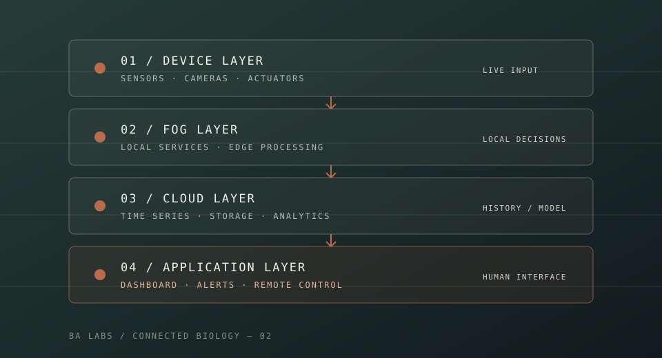
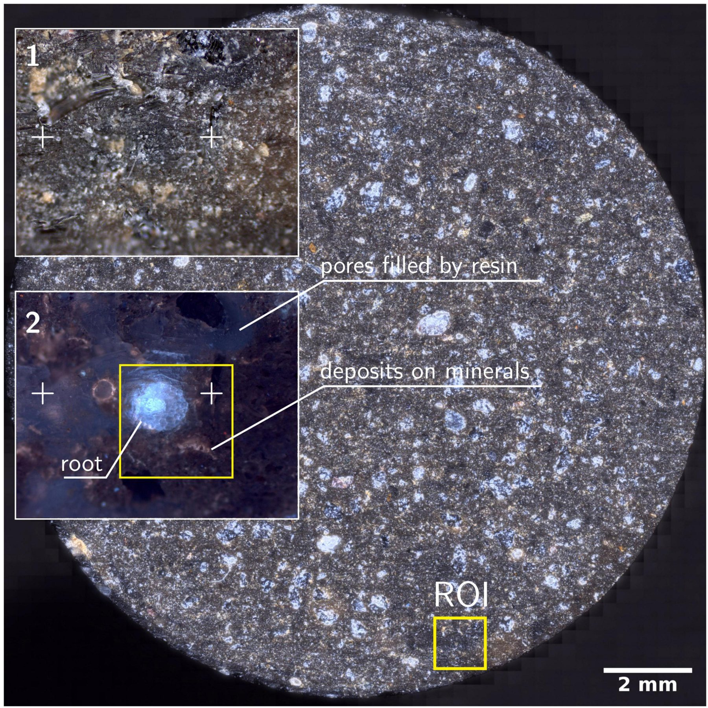
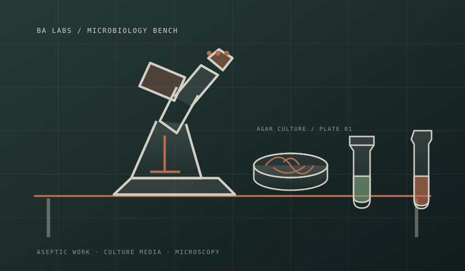
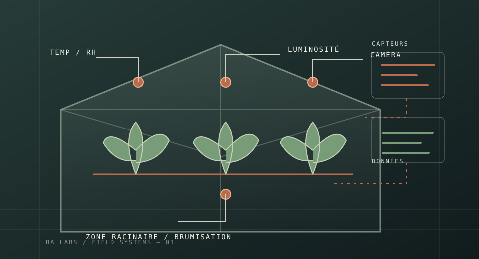

01 / MYCOLOGIE
Mycologie & cultures
Souches · mycélium · substratsSouches fongiques, cultures, mycélium et valorisation des substrats.
OUVRIR L’UNIVERS ↗BA Labs relie biologie appliquée, mycologie, biotechnologies et ingénierie. Nous explorons des organismes, des matières et des systèmes pour développer des méthodes et des applications documentées.

Les huit univers conservent leur identité propre. Ils permettent de parcourir les sujets, les ressources et les applications sans réduire BA Labs à une seule discipline.
Souches fongiques, cultures, mycélium et valorisation des substrats.
OUVRIR L’UNIVERS ↗
Microorganismes utiles, bioprocédés et solutions biologiques appliquées.
OUVRIR L’UNIVERS ↗
Instrumentation, capteurs, automatisation et prototypes techniques.
OUVRIR L’UNIVERS ↗
Un axe expérimental consacré aux sols, à l’eau et à la matière organique.
OUVRIR L’UNIVERS ↗
Protocoles, mesures, reproductibilité et qualification des résultats.
OUVRIR L’UNIVERS ↗
Catalogue public, ressources biologiques, supports et kits.
OUVRIR LE CATALOGUE ↗
Projets scientifiques, essais et résultats sélectionnés pour une présentation publique.
VOIR LES CHANTIERS ↗
Guides publics, fiches, méthodes et ressources de transmission.
VOIR LA DÉMARCHE ↗Quelques chantiers présentés sur la vitrine. Ils illustrent la diversité des travaux sans prétendre résumer l’ensemble des activités.

Relier capteurs, acquisition de données et automatisation pour mieux suivre les environnements expérimentaux.
Capteurs · instrumentation · automatisation
INGÉNIERIE & IOTDÉCOUVRIR LE DOMAINE ↗
Observer les souches, développer les cultures et explorer les relations entre mycélium, substrats et matière organique.
Ressources fongiques · cultures & multiplication · applications mycologiques
MYCOLOGIE APPLIQUÉEDÉCOUVRIR LE DOMAINE ↗
Étudier les mélanges organiques, les substrats et les propriétés des matières pour imaginer de nouveaux usages.
Matières organiques · substrats · essais de culture
MATIÈRES & CIRCULARITÉDÉCOUVRIR LE DOMAINE ↗Explorer les huit univers et leurs connexions.
OUVRIR L’EXPLORATEUR ↗Chaque piste commence par une question. Elle progresse par observation, expérimentation et documentation, avant d’envisager une application.
Les méthodes, paramètres et limites doivent rester visibles : une piste exploratoire ne se présente pas comme un résultat validé.
Du laboratoire au terrain, sans perdre la trace des essais.
RETOURNER À BA LABS ↗